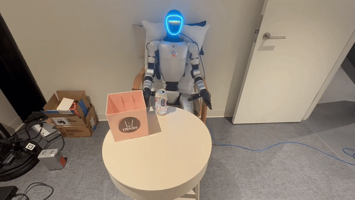

Publications
PointArena: Probing Multimodal Grounding Through Language-Guided Pointing
ArXiv, 2025
AMBF-Based Simulation of RAVEN-II Surgical Robot with Realistic Control and Feedback API
IEEE ICRA 2025 Workshop ELSR
Projects

Humanoid Bimanual Learning Pipeline
Adapted and deployed a full teleoperation-to-deployment pipeline tailored for Molmo-ACT training in bimanual manipulation tasks with the Unitree G1 Humanoid and Dex3 robotic hand.

Mobile Manipulation Learning Pipeline
Developed a complete teleoperation-to-deployment pipeline for the Unitree Go2 quadruped and D1-T robotic arm. Adapted the Molmo-ACT and ACT for grounding in custom mobile manipulation settings.

Teleoperation Framework for UFactory Lite 6 Using Gello
Implemented real-time 6-DOF control for the UFactory Lite 6 arm using the Gello framework, with intuitive manipulation in 3D space. It includes trajectory record and playback modules for reproducible experimentation.

Bimanual Franka Control in MuJoCo Using Gello
Enabled real-time translation and rotation control of the Franka bimanual via Gello in MuJoCo simulation, allowing smooth and accurate teleoperation in 3D workspace.

Autonomous MuSHR Car
Implemented a ROS-based autonomous MuSHR car system with particle filter SLAM, Halton-sampled roadmap planning (Lazy A*), and PP/PID/MPC/MPPI path tracking controllers.

Ultrasonic Obstacle Avoiding Car
Developed an Arduino-based autonomous car with ultrasonic obstacle detection, using FreeRTOS for real-time task scheduling and hardware integration.